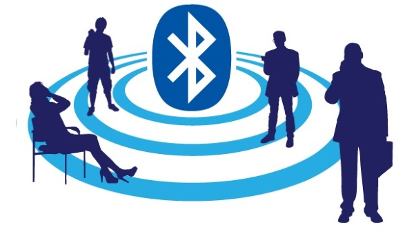

Bluetooth, une définition en un clic
Technologie : Standard de communication né en 1994, le Bluetooth repose sur l'utilisation d'ondes radio UHF. Cette technologie permet de connecter entre eux plusieurs terminaux et d'échanger des données sur une courte distance.
Quel rapport entre une technologie de communication sans fil, un standard développé par Ericsson en 1994, et un ancien monarque danois ?
A priori pas grand-chose, si ce n'est un nom. Le Bluetooth tire en effet son nom du roi Harald Blatand, Harald Blue Tooth dans sa traduction anglaise. Le plus grand fait d'armes de ce roi est d'avoir unifié les tribus danoises pour constituer un même royaume.
La technologie sans fil réussit elle aussi cette prouesse. Contrairement au Wi-Fi, qui permet à des terminaux de se connecter au réseau et à sa bande passante pour leurs usages, le Bluetooth établit une connexion entre deux périphériques. Si Wi-Fi et Bluetooth exploitent une même bande de fréquences radio (2,4 GHz), les usages de ces protocoles sont donc bien différents.
Bluetooth : la connectivité du quotidien
Plusieurs grands industriels ont participé à son développement grâce à la création en 1998 du Bluetooth Special Interest Group (SIG). A Ericsson se joignent alors IBM, Intel, Nokia et Toshiba. Et depuis l'avènement des téléphones mobiles, le Bluetooth est la solution de référence pour relier des terminaux. Il permet ainsi des échanges bidirectionnels de données, comme des transferts de fichiers. Autre spécificité, les communications s'effectuent sur de courtes distances. C'est un protocole de proximité.
Pour connecter un smartphone avec une enceinte connectée ou tout autre appareil sans fil, une montre ou un casque audio, le Bluetooth peut se satisfaire de cette portée réduite à quelques mètres. A noter également que le Bluetooth supporte au maximum huit terminaux. Ces derniers doivent intégrer une puce Bluetooth comprenant un module pour l'émission et la réception. S'y ajoute une couche logicielle spécifique.
Ces composants sont complétés par une adresse. L'établissement d'une connexion Bluetooth entre deux appareils nécessite ainsi d'établir un pont sans fil entre eux. Le fonctionnement est simple, ce qui explique sa popularité et son omniprésence. Pour connecter un téléphone à une enceinte connectée, il suffit ainsi d'activer le Bluetooth sur les deux terminaux.
Encore faut-il avoir au préalable effectué une étape d'appairage. C'est une phase d'authentification. Pour des raisons de sécurité, un code de sécurité peut être nécessaire. Cela permet de s'assurer de la légitimité de la connexion Bluetooth. Le premier appairage validé et authentifié, la connexion sera mémorisée et donc automatique par la suite.
Bluetooth 5.0 : un standard qui s'enrichit
La dernière version du standard Bluetooth a été finalisée en 2016. Le Bluetooth 5.0 apporte des améliorations significatives, au point de remettre en cause son principe de connectivité de proximité. En comparaison du Bluetooth 4.0, la V5 double pratiquement la bande passante, mais accroît aussi considérablement la portée. Elle peut varier entre 40 et 350 mètres, et aller même jusqu'à 500 pour certains modules.
Précisons que la version 4.0 de cette technologie introduisait par ailleurs un mode économie d'énergie, ou Low Energy (BLE). Il permet ainsi de préserver les ressources des objets connectés dont les batteries sont de faible capacité. Ces deux modes distincts, Classic et Low Energy, répondent à différents usages, disponibles simultanément sur les smartphones, qui opèrent en Dual Mode.
Avec le Low Energy, le Bluetooth se positionne comme une technologie de l'univers de l'IoT et de la domotique, permettant notamment la création de réseaux maillés, ou Bluetooth Mesh. Et les principales évolutions introduites via le Bluetooth 5.0 portent sur le mode Low Energy et la domotique.
Mais le Bluetooth a de la concurrence dans ce secteur, comme ZigBee ou Z-Wave. Le Bluetooth a cependant l'avantage d'être largement connu du grand public. ZigBee avait pour lui la portée et la robustesse du signal. Le Bluetooth 5.0 et Bluetooth Mesh rebattent cependant les cartes.
Raccourcis Clavier
- Alt + ← Article précédent
- Alt + → Article suivant
- Alt + ↑ Haut de page
- Alt + Home Retour au blog